МИНИСТЕРСТВО НАУКИ И ВЫСШЕГО ОБРАЗОВАНИЯ РОССИЙСКОЙ ФЕДЕРАЦИИ
Южный федеральный университет
Инженерно-технологическая академия
Институт компьютерных технологий и информационной безопасности
Кафедра систем автоматизированного проектирования
Сетевой мультимедийный электронный
информационно-образовательный ресурс
на тему: «Возможности и средства применения искусственного интеллекта
в разработке мультимедиа продуктов»
По дисциплине: проект «Разработка элементов поддержки
мультимедиа и дистанционных технологий»
Таганрог, 2026
Современный мультимедийный продукт объединяет разнородные материалы: трёхмерные модели, изображения, видеоряд, звуковое и музыкальное оформление. Традиционно подготовка этих компонентов требует длительной ручной работы, специализированного программного обеспечения и профессиональных навыков в нескольких областях одновременно. Применение искусственного интеллекта изменяет эту ситуацию: генеративные модели позволяют создавать первоначальные концепции за минуты, автоматизировать рутинные операции обработки и выполнять задачи, которые ранее были доступны только узким специалистам. В результате ИИ становится частью производственного процесса на всех этапах разработки мультимедийных продуктов — от поиска идеи до подготовки финальных материалов.
Цель работы — систематизировать возможности и средства применения искусственного интеллекта в разработке мультимедийных продуктов.
Для достижения цели поставлены следующие задачи:
Материал систематизирован по способу работы с исходными данными: генерация по текстовому описанию, преобразование изображений и записей, редактирование отдельных областей, улучшение качества, перенос стиля и движений, интерактивные системы. Для каждого направления приводятся обобщённая схема работы, примеры систем, преимущества и ограничения, а в завершении раздела — сравнительная таблица.
Работа состоит из четырёх разделов. Раздел 1 посвящён генерации и обработке 3D-моделей: от отдельных объектов и параметрических инженерных конструкций до целых виртуальных миров. Раздел 2 рассматривает создание и обработку фотографий. Раздел 3 — генерацию и обработку видеоматериалов. Раздел 4 — синтез и обработку аудио, включая речь и музыку. В каждом разделе описываются принципы работы, примеры систем, преимущества и ограничения подходов, а также применение технологий при разработке мультимедийных продуктов.
Описание систем основано на официальной документации и сайтах разработчиков, исследовательских публикациях и демонстрационных материалах. Наряду с коммерческими платформами рассматриваются открытые исследовательские модели, что позволяет охарактеризовать возможности технологий в целом. Возможности отдельных сервисов быстро развиваются, поэтому приведённые сведения отражают состояние систем на момент подготовки работы.
Раздел посвящён генерации и обработке трёхмерных моделей — от отдельных объектов и параметрических инженерных конструкций до целых виртуальных миров. По способу работы с исходными данными искусственный интеллект для 3D-моделирования разделяется на системы, создающие объекты по тексту, одному изображению, нескольким изображениям, видеозаписи или инженерному заданию, а также на системы генерации целых виртуальных окружений.
Для каждого направления приводятся обобщённая схема работы, примеры доступных сервисов, платформ и исследовательских моделей, преимущества и ограничения, а в завершении раздела направления сравниваются между собой. Особое внимание уделено применению технологий при разработке мультимедийных продуктов и VR/AR-приложений: созданию игровых и интерактивных ассетов, оцифровке реальных предметов и помещений, инженерным тренажёрам и концепциям виртуальных пространств.
Генерация трёхмерных объектов по текстовому описанию
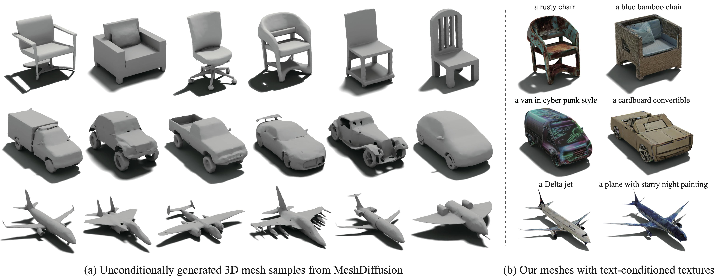
Пользователь описывает желаемый объект естественным языком, а искусственный интеллект преобразует описание в трёхмерную модель.
Например, пользователь вводит:
«Создай старинный деревянный сундук с металлическими уголками, резными узорами и золотым замком».
ИИ анализирует смысл описания и создаёт объект с соответствующей формой и внешним видом.
Это обобщённая схема. В конкретной архитектуре генерация формы и текстур может происходить совместно, а некоторые сервисы сначала создают промежуточное изображение и только затем восстанавливают 3D-геометрию.
Главное достоинство Text-to-3D — возможность быстро создавать первоначальные концепции объектов без глубоких знаний традиционных 3D-редакторов.
Технология особенно полезна при разработке компьютерных игр, проектировании виртуальных выставок, создании декоративных элементов и прототипировании.
Текстовое описание не всегда однозначно. Нейросеть самостоятельно определяет недостающие детали объекта, из-за чего результат может отличаться от первоначального замысла.
Кроме того, сгенерированные модели могут содержать нерациональную топологию, ошибки геометрии или избыточное количество полигонов. Для использования в игровых движках и VR-приложениях нередко требуется последующая оптимизация.
Генерация трёхмерного объекта по одному изображению
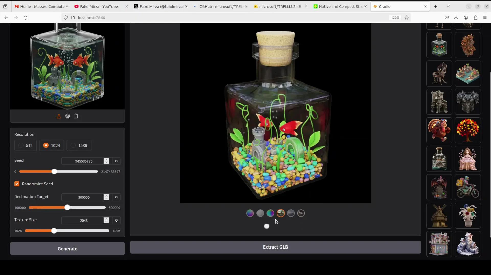
Пользователь загружает фотографию или рисунок объекта, а искусственный интеллект восстанавливает его предполагаемую трёхмерную форму. Исходное изображение задаёт внешний вид и часть пропорций будущей модели.
Например, пользователь загружает фотографию настольной лампы и получает трёхмерную модель, которую можно вращать и размещать в виртуальном помещении.
Основная особенность подхода заключается в том, что обратная сторона и другие невидимые области объекта не содержатся на фотографии. Нейросеть достраивает их на основе изученных закономерностей; поэтому реконструкция может быть правдоподобной, но не полностью точной.
Image-to-3D позволяет получить цифровой объект на основе конкретного визуального образца. Это удобно при создании каталогов товаров, виртуальной мебели, игровых ассетов и предварительных моделей для дополненной реальности.
По сравнению с текстовой генерацией изображение часто лучше передаёт цвет, композицию и узнаваемые особенности предмета.
Из одного ракурса невозможно достоверно восстановить все поверхности объекта. Могут возникать ошибки в пропорциях, геометрии скрытых элементов и текстурах. Для технических задач модель обычно требует дополнительной проверки и редактирования.
Реконструкция трёхмерных объектов по нескольким изображениям с разных ракурсов
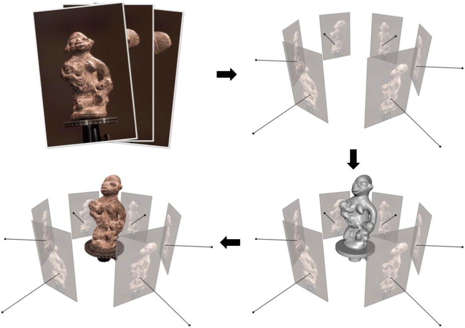
Пользователь снимает объект с нескольких сторон. Система сопоставляет наблюдаемые детали на разных кадрах, оценивает пространственные отношения и восстанавливает трёхмерную структуру. В этом направлении используются как классические методы компьютерного зрения, так и нейросетевые подходы.
Например, для создания цифровой копии музейной скульптуры выполняется серия фотографий вокруг экспоната. Затем система объединяет изображения в общую пространственную модель.
В традиционной реконструкции применяются Structure from Motion (SfM) и Multi-View Stereo (MVS). Нейросетевые системы могут оценивать геометрические отношения более непосредственно и помогать при сложных условиях съёмки.
Наличие нескольких ракурсов уменьшает неопределённость формы и позволяет получать более достоверную геометрию, чем при обработке одной фотографии.
Подход подходит для цифровизации культурных объектов, музейных коллекций, архитектурных элементов и предметов, которые необходимо воспроизвести в виртуальной среде.
Качество зависит от освещения, числа и разнообразия ракурсов, перекрытия между кадрами и неподвижности объекта. Прозрачные, зеркальные и однородные поверхности остаются сложными для реконструкции. Некоторые системы создают облако точек или карты глубины, а не готовый оптимизированный mesh.
Генерация параметрических инженерных моделей по текстовому техническому заданию
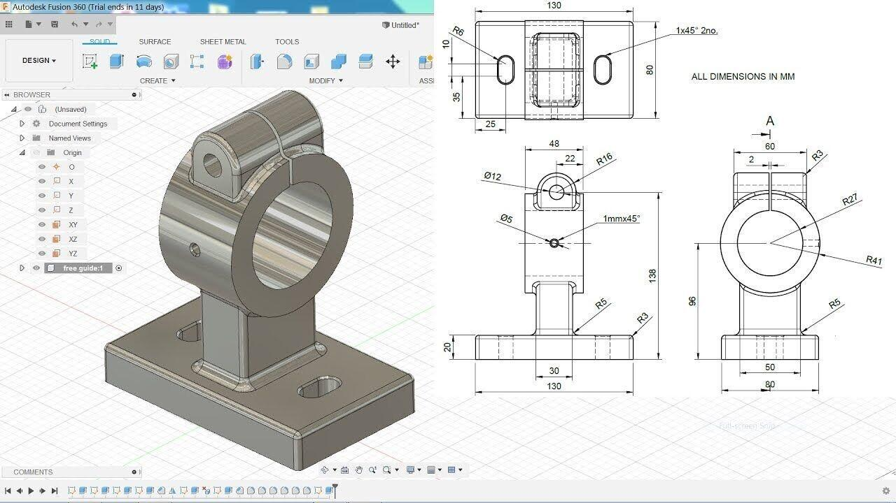
В Text-to-CAD искусственный интеллект должен создать не только внешне похожий объект, но и структурированную инженерную модель, которую можно изменять через параметры, эскизы и операции построения.
Например, пользователь задаёт:
«Создай металлическую пластину размером 100 × 60 × 5 мм с четырьмя симметричными отверстиями диаметром 8 мм».
В отличие от обычного полигонального моделирования, здесь важны точные размеры, геометрические связи и возможность дальнейшего инженерного редактирования.
Параметрическое представление удобно для изменения размеров деталей, инженерного проектирования, прототипирования и разработки оборудования.
Такие конструкции могут использоваться в технических демонстрациях и обучающих симуляторах, где важна не только визуальная форма, но и устройство объекта.
Нейросетевая генерация не гарантирует выполнение всех инженерных требований. Допуски, размеры, прочность и технологичность необходимо проверять. Сложные сборки и взаимосвязанные ограничения остаются трудными задачами.
Восстановление трёхмерных объектов и пространств по видеозаписи
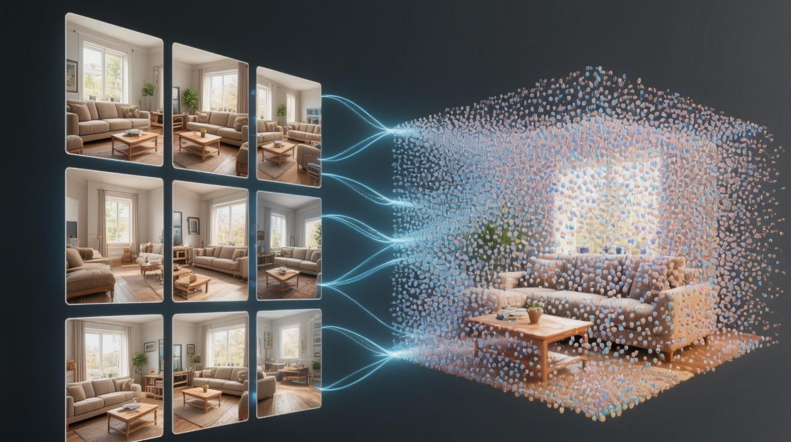
Пользователь записывает видео, перемещая камеру вокруг объекта или внутри помещения. Алгоритм использует последовательность кадров для оценки положения камеры, определения глубины и восстановления внешнего вида трёхмерной сцены.
Например, можно снять проход по университетской лаборатории, а затем получить цифровое представление помещения для виртуальной экскурсии.
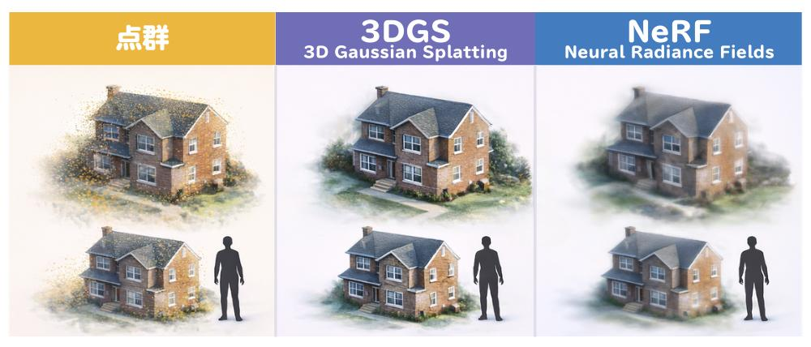
NeRF и 3D Gaussian Splatting представляют сцену иначе, чем обычная полигональная модель. Они хорошо подходят для синтеза реалистичных видов, но не всегда обеспечивают готовую геометрию для взаимодействия с объектами.
Video-to-3D позволяет оцифровывать помещения и реальные пространства с помощью относительно доступного оборудования. Подход востребован в виртуальных экскурсиях, недвижимости, цифровых двойниках и сохранении культурного наследия.
При использовании нейронных представлений можно добиться высокой визуальной реалистичности сцены.
Для качественной реконструкции нужны достаточное число ракурсов, хорошее освещение и согласованное движение камеры. Динамические объекты и отражающие поверхности могут вызывать ошибки.
Фотореалистичная модель не обязательно содержит коллайдеры, отдельные редактируемые объекты и физические свойства. Для VR-приложений часто необходима дополнительная обработка и оптимизация.
Генерация целых виртуальных окружений по описанию или другим исходным данным
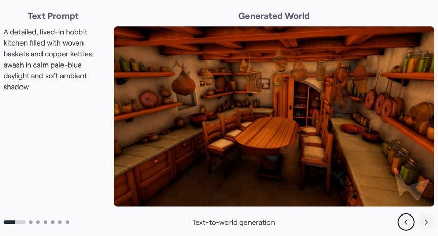
Text-to-World расширяет генерацию от отдельного трёхмерного объекта до целого пространства: зданий, комнат, ландшафтов и взаимного расположения объектов. Некоторые системы также принимают изображения или видео в качестве исходной информации.
Например, пользователь вводит:
«Создай заброшенную космическую станцию с коридорами, лабораторией, центральным залом и панорамными окнами».
Следует различать системы, формирующие сохраняемую пространственную сцену, и интерактивные world models, которые генерируют визуальные наблюдения в ответ на действия пользователя. Вторые не обязательно создают редактируемую 3D-геометрию.
Подход позволяет быстро создавать концепции виртуальных помещений, игровых уровней и демонстрационных пространств. Особенно перспективен для прототипирования образовательных VR-сред и интерактивных мультимедийных продуктов.
Сгенерированный мир не обязательно готов к использованию в VR-шлеме. Может отсутствовать корректная физика, редактируемая геометрия, полноценная навигация и оптимизация для стабильной частоты кадров.
Кроме того, сохранение согласованности большого пространства и устойчивости мира при свободном перемещении пользователя остаётся технически сложной задачей.
| Способ | Входные данные | Основной результат | Применение в VR/AR |
|---|---|---|---|
| Text-to-3D | Текст | Отдельный 3D-объект | Игровые и интерактивные ассеты |
| Image-to-3D | Одно изображение | 3D-модель объекта | AR-каталоги и цифровые предметы |
| Multi-view-to-3D | Несколько изображений | Реконструкция геометрии | Цифровизация экспонатов и предметов |
| Text-to-CAD | Технический текст | Параметрическая конструкция | Инженерные VR-тренажёры |
| Video-to-3D | Видео | 3D-сцена или нейронное представление | Виртуальные экскурсии и цифровые двойники |
| Text-to-World | Текст и другие исходные данные | Целое окружение | Прототипы VR-миров и игровых уровней |
По способу генерации искусственный интеллект для 3D-моделирования разделяется на системы, создающие объекты по тексту, одному изображению, нескольким изображениям, видеозаписи или инженерному заданию, а также на системы генерации целых виртуальных миров.
Для разработки мультимедийных продуктов эти подходы могут использоваться совместно: Text-to-World формирует окружение, Text-to-3D создаёт отдельные элементы, Image-to-3D и Multi-view-to-3D помогают переносить реальные предметы в цифровую среду, а Video-to-3D используется для оцифровки существующих помещений.
При разработке VR/AR важно учитывать, что визуально реалистичная 3D-сцена не обязательно является технически готовой: для интерактивности могут потребоваться оптимизация геометрии, физические столкновения, правильный масштаб и настройка в игровом движке.
Искусственный интеллект применяется для создания новых изображений, изменения существующих фотографий, восстановления качества и автоматизации обработки графических материалов. В разработке мультимедиа-продуктов такие технологии используются для создания иллюстраций, рекламной графики, фонов, текстур, концепт-артов и изображений для интерфейсов.
По способу работы с исходными данными можно выделить генерацию по тексту (Text-to-Image), преобразование изображений (Image-to-Image), изменение отдельных областей (Inpainting), расширение границ (Outpainting), улучшение качества (Image Enhancement), перенос художественного стиля (Style Transfer) и генерацию по изображениям-образцам (Reference-based Generation).
Генерация изображений по текстовому описанию
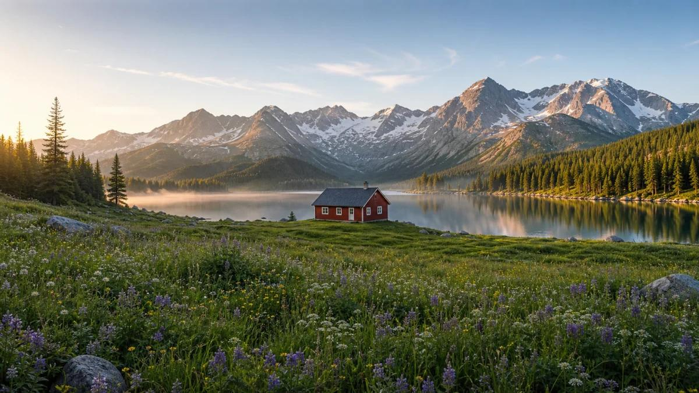
Пользователь описывает желаемое изображение естественным языком. Искусственный интеллект интерпретирует объекты, окружение, композицию, освещение и художественный стиль, после чего создаёт новое изображение. В отличие от обычного поиска готовых картинок, генеративная модель синтезирует визуальный результат.
Например, пользователь вводит:
«Создай фотореалистичную фотографию горного озера на рассвете, с деревянным домиком у берега и мягким туманом».
В современных системах используются диффузионные и другие генеративные подходы. Конкретная модель может работать непосредственно с пикселями либо с их компактным скрытым представлением.
Text-to-Image позволяет быстро создавать концептуальные изображения, иллюстрации и варианты композиции без проведения реальной фотосъёмки. Подход удобен для поиска визуальной идеи и подготовки материалов на ранних этапах разработки мультимедийного продукта.
Результат может не полностью соответствовать описанию: возникают ошибки в мелких деталях, надписях, перспективе и расположении объектов. Фотореалистичный результат не следует считать доказательством существования изображённой сцены.
Преобразование существующей фотографии с помощью ИИ
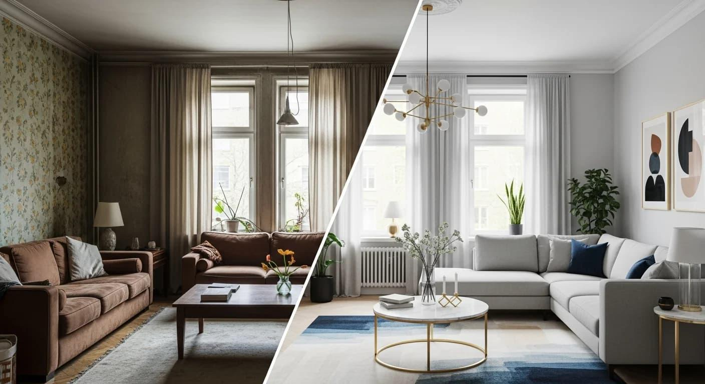
Пользователь загружает фотографию и описывает требуемые изменения. Нейросеть использует исходное изображение как визуальную основу и создаёт новый вариант, изменяя стиль, освещение, окружение или отдельные детали.
Например, пользователь загружает фотографию комнаты и вводит:
«Преобразуй помещение в современную гостиную с тёплым освещением, сохрани расположение окон и дверей».
В зависимости от модели и выбранных параметров результат может сохранять исходную структуру почти полностью либо существенно менять её.
Подход позволяет быстро создавать варианты дизайна на основе уже существующего материала. Он удобен, когда необходимо сохранить общую композицию фотографии, но изменить её визуальное оформление.
При сильном преобразовании могут изменяться пропорции, исходные объекты, логотипы и другие детали. Сохранение отдельных элементов зависит от точности инструкции и возможностей конкретной модели.
Генеративное изменение отдельных областей фотографии
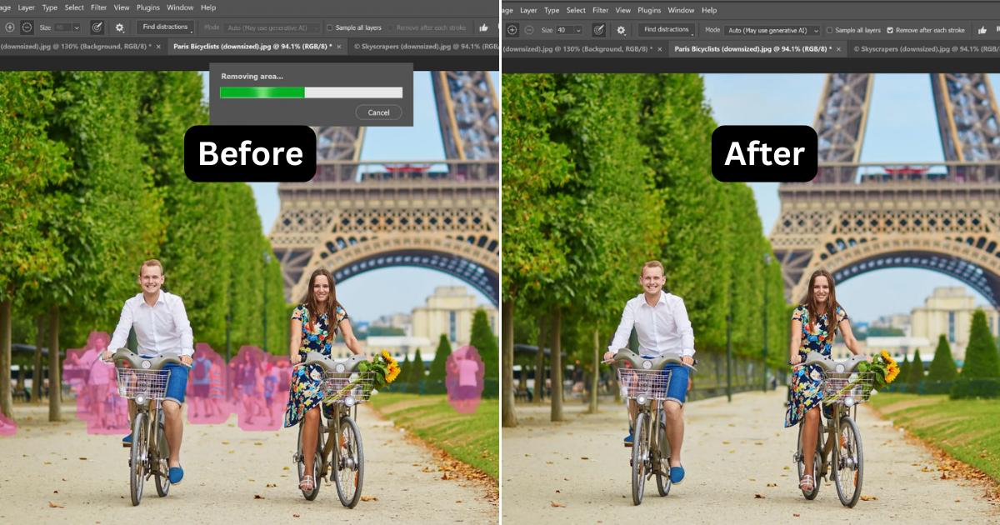
Inpainting позволяет изменять не всю фотографию, а только выбранную область. Пользователь выделяет объект или участок изображения с помощью маски и указывает, что необходимо удалить, добавить или заменить. Нейросеть учитывает окружающие пиксели и формирует подходящее содержимое.
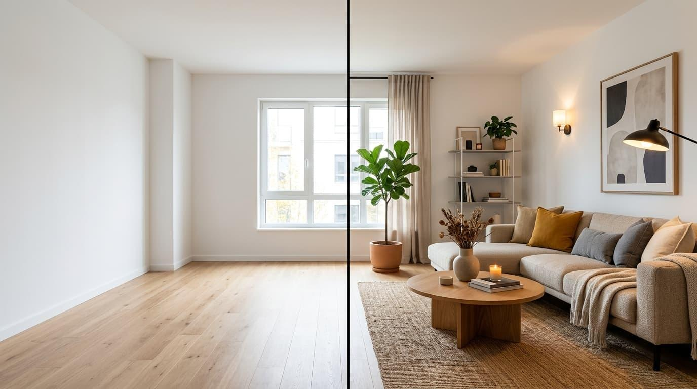
Например, пользователь выделяет случайного прохожего на фотографии здания и вводит:
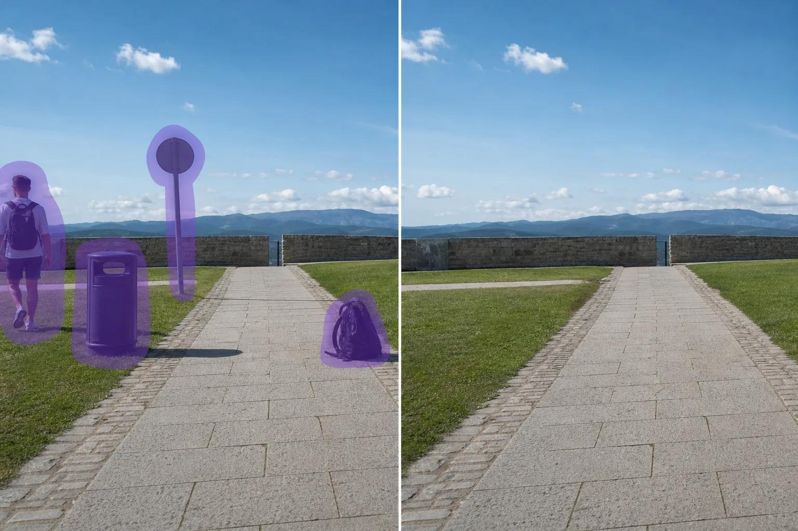
«Удали человека и восстанови фон стены и тротуара».
К разновидностям этой операции относятся удаление объектов (Object Removal), замена объектов (Object Replacement) и генеративное заполнение (Generative Fill).
Inpainting ускоряет сложную ретушь и позволяет удалять нежелательные объекты без ручного восстановления фона по небольшим фрагментам фотографии.
Нейросеть создаёт вероятное содержимое скрытой области, а не восстанавливает достоверно то, что находилось за удалённым объектом. На сложных границах и повторяющихся текстурах возможны артефакты.
Генеративное расширение изображения за исходные границы
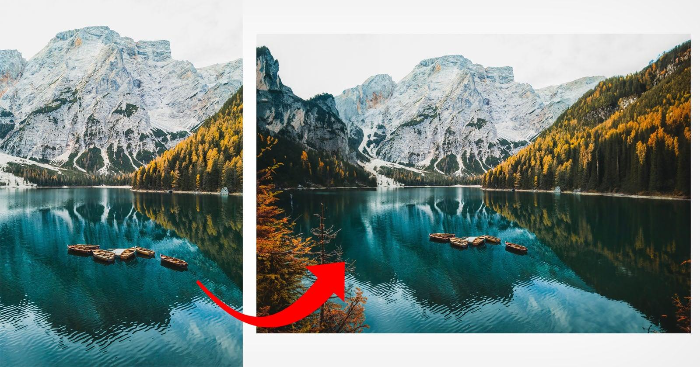
Outpainting создаёт дополнительные области изображения за пределами первоначального кадра. Пользователь расширяет холст, а модель достраивает окружение, ориентируясь на стиль, перспективу и содержание существующей фотографии.
Например, вертикальную фотографию природного пейзажа необходимо использовать как горизонтальную обложку для видеоролика. ИИ может дорисовать по сторонам горы, растительность и небо вместо простой обрезки или растягивания изображения.
Подход помогает адаптировать один исходный кадр к разным размерам экранов и формам медиаконтента без искажения центральной части фотографии.
Модель может дорисовать физически или геометрически неправдоподобные элементы. Новые области представляют собой предположение ИИ, а не реальное продолжение сфотографированной сцены.
Улучшение качества, детализации и восстановление фотографий
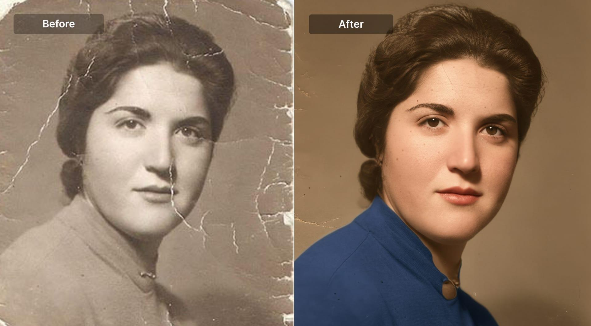
Image Enhancement объединяет методы, которые улучшают существующее изображение: увеличивают разрешение, уменьшают цифровой шум, устраняют размытие и восстанавливают повреждённые участки. Система анализирует дефекты и формирует улучшенную версию фотографии.
Например, пользователь загружает старую архивную фотографию с царапинами и низкой детализацией. Нейросеть может уменьшить видимые повреждения и сделать изображение более чётким.
Основные направления:
Такие технологии помогают использовать фотографии, которые ранее могли быть непригодны для публикации, печати или включения в мультимедийный проект. Особенно востребованы для архивных материалов и изображений низкого разрешения.
Нейросеть может создавать правдоподобные, но не существовавшие в оригинале детали. Например, восстановленные черты лица не обязательно точно соответствуют человеку на сильно размытой фотографии. Поэтому улучшенное изображение нельзя безоговорочно считать достоверным восстановлением исходных данных.
Преобразование художественного стиля фотографии
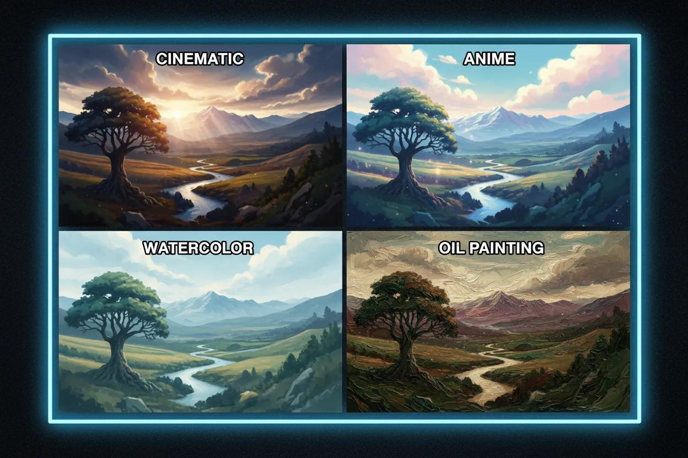
Style Transfer — технология, которая переносит характерные особенности одного художественного стиля на другое изображение. Нейросеть изменяет цвета, фактуры, контуры и общий визуальный характер кадра, стараясь сохранить основные объекты и композицию.
Например, пользователь загружает фотографию средневекового замка и задаёт:
«Преобразуй фотографию в иллюстрацию, выполненную в стиле масляной живописи, сохрани расположение зданий и гор».
Классические методы Neural Style Transfer выделяют признаки содержания и стиля, а современные генеративные модели могут выполнять стилизацию с помощью текстовых инструкций и изображений-референсов.
Style Transfer позволяет быстро создавать несколько художественных вариантов одного изображения и поддерживать единый визуальный стиль мультимедийного продукта.
Сильная стилизация может изменять мелкие детали и форму объектов. Поэтому при работе с узнаваемыми предметами, символикой и текстом результат часто требует дополнительного редактирования.
Генерация изображений на основе одного или нескольких визуальных образцов
Reference-based Generation использует загруженные изображения как образцы для создания нового визуального материала. Референсы могут задавать внешний вид предмета, художественный стиль, композицию или освещение.
Например, пользователь загружает фотографию товара, изображение интерьера и пример освещения, затем вводит:
«Создай рекламную фотографию этого предмета в указанном интерьере с освещением как на третьем изображении. Сохрани форму и цвет товара».
Подход помогает создавать серии визуальных материалов в общем стиле и использовать один товар или персонажа в разных композициях. Он полезен при подготовке рекламных кампаний и графики для мультимедийных продуктов.
Даже при использовании референсов модель может менять детали исходного объекта: размеры, текстуру, узор или логотип. Для коммерческих материалов важно проверять соответствие оригинальному товару.
| Способ | Входные данные | Основной результат | Применение в мультимедиа |
|---|---|---|---|
| Text-to-Image | Текст | Новое изображение | Иллюстрации, фоны и концепт-арты |
| Image-to-Image | Изображение и инструкция | Изменённое изображение | Редизайн, варианты оформления |
| Inpainting | Фотография и выделенная область | Локальное изменение | Ретушь и замена объектов |
| Outpainting | Фотография и расширенный холст | Расширенная композиция | Баннеры и обложки |
| Image Enhancement | Фотография | Улучшенное изображение | Реставрация и подготовка к публикации |
| Style Transfer | Фотография и описание стиля | Стилизованное изображение | Иллюстрации и оформление проектов |
| Reference-based Generation | Одно или несколько изображений | Новое изображение по образцам | Рекламные материалы и серии изображений |
По способу генерации искусственный интеллект для работы с фотографиями включает системы создания изображений по тексту, преобразования исходных фотографий, изменения локальных областей, расширения композиции, восстановления качества и генерации по визуальным образцам.
Для разработки мультимедийных продуктов эти подходы могут использоваться совместно: Text-to-Image создаёт исходные концепции, Reference-based Generation помогает выдерживать общий стиль, Inpainting и Outpainting используются для точной адаптации композиции, а Image Enhancement подготавливает готовые материалы к публикации.
При использовании таких изображений необходимо учитывать, что генеративная нейросеть может изменять достоверные детали и создавать новые, отсутствовавшие в исходном материале. Поэтому важные элементы фотографий требуют проверки, особенно в документальных, образовательных и коммерческих проектах.
Искусственный интеллект применяется для создания новых видеороликов, анимации изображений, изменения отснятого материала, восстановления качества и автоматизации монтажа. В разработке мультимедиа-продуктов эти технологии используются при подготовке рекламы, обучающих видео, анимации, кинематографических сцен и материалов для социальных сетей.
По способу работы с исходными данными можно выделить генерацию по тексту (Text-to-Video), оживление изображения (Image-to-Video), преобразование существующего видео (Video-to-Video), изменение отдельных областей (Video Inpainting), улучшение качества (Video Enhancement), создание говорящих персонажей (Audio-to-Video), генерацию по сценарию (Script-to-Video), перенос движений (Motion Transfer) и интеллектуальный монтаж (AI Video Editing).
Генерация видеороликов по текстовому описанию
Пользователь описывает сцену, действия объектов, освещение и движение камеры. Искусственный интеллект создаёт последовательность кадров, в которой должны сохраняться внешность объектов и логика движения. Некоторые современные модели также синтезируют звуковое сопровождение.
Например, пользователь вводит:
«Создай кинематографичный ролик: космический корабль летит над горным ландшафтом на закате, камера плавно следует за ним».
В отличие от генерации одной фотографии, здесь требуется согласовывать содержимое не только внутри кадра, но и между соседними кадрами. Это свойство называют временной согласованностью (Temporal Consistency).
Подход позволяет быстро создавать визуальные концепции, короткие сценки и предварительные варианты роликов без натурной съёмки. Он особенно полезен для проверки идей и подготовки раскадровок мультимедийных проектов.
При генерации возможны изменения внешности персонажей, исчезновение предметов и ошибки физики движения. Получение длинной последовательности с постоянными персонажами сложнее, чем создание короткого клипа.
Создание анимации на основе одного изображения
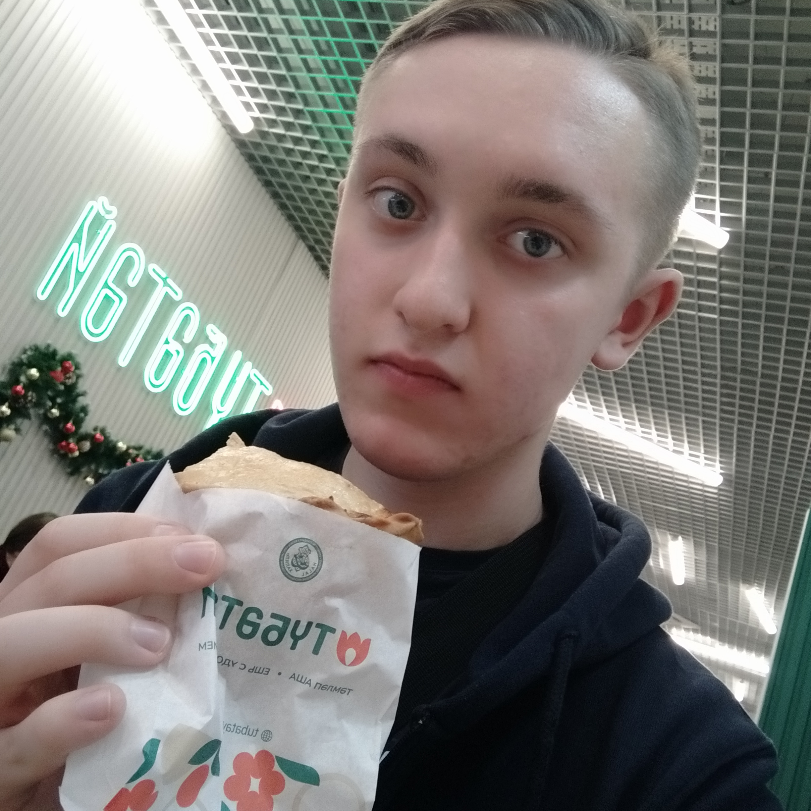
Пользователь загружает фотографию или рисунок и описывает желаемое движение. Модель использует изображение как визуальную основу и создаёт последовательность кадров: может оживлять человека, перемещать предметы или имитировать движение камеры.
Например, пользователь загружает изображение горного озера и задаёт:
«Пусть по воде идут небольшие волны, облака медленно перемещаются, а камера плавно приближается к берегу».
Image-to-Video позволяет превратить статичное изображение в динамический материал без ручной покадровой анимации. Исходный кадр помогает лучше задать композицию и внешний вид объектов.
Фотография не содержит информации о реальном движении и скрытых поверхностях. Поэтому модель достраивает их предположительно, что может приводить к искажению формы, перспективы и мелких деталей.
Преобразование существующей видеозаписи с сохранением её движения
Пользователь загружает готовое видео и задаёт требуемые изменения: художественный стиль, окружение, внешний вид персонажей или освещение. Нейросеть опирается на исходную последовательность кадров и формирует новый видеоряд.
Например, пользователь вводит:
«Преобразуй запись прогулки по обычной улице в фантастический город, сохрани движение людей и траекторию камеры».
Можно использовать движения реальных актёров и камеры, не создавая всю анимацию с нуля. Это ускоряет разработку стилизованных сцен и визуальных эффектов.
При сложных поворотах, перекрытиях объектов и быстрых движениях нейросеть может менять внешность персонажей или создавать мерцание и нестабильные текстуры.
Генеративное изменение отдельных областей видеозаписи
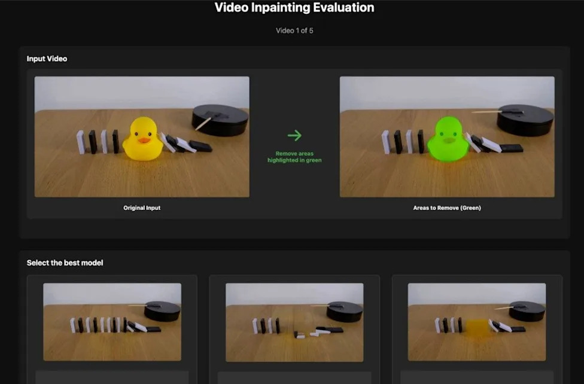
Video Inpainting позволяет удалить, заменить или добавить объект не на одном изображении, а в целой последовательности кадров. Пользователь указывает область редактирования, а система отслеживает её положение и генерирует подходящее содержимое во времени.
Например, пользователь выбирает прохожего на записи площади и вводит:
«Удали человека из видеоролика и восстанови здание и тротуар позади него».
Технология сокращает объём ручной покадровой ретуши и помогает удалять лишние элементы в сложных видеосценах.
Скрытые за объектом участки невозможно всегда восстановить достоверно. При движении камеры могут появляться мерцание, повторяющиеся элементы и искажения фона.
Улучшение качества, разрешения и плавности видеозаписей
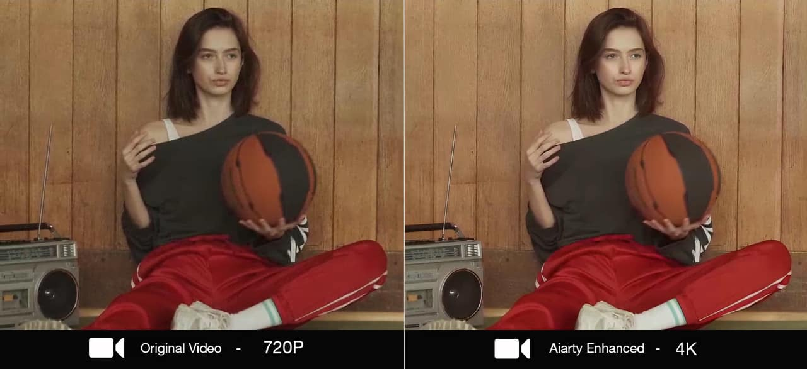
Video Enhancement объединяет методы повышения качества исходного видеоматериала: увеличение разрешения, удаление цифрового шума, устранение размытия, стабилизацию и генерацию промежуточных кадров. Для более устойчивого результата могут анализироваться несколько соседних кадров.
Например, пользователь загружает архивную видеозапись низкого разрешения и просит подготовить её для демонстрации на современном экране.
Основные направления:
Технологии позволяют использовать видеоматериалы, качество которых недостаточно для современных мультимедийных проектов. Они особенно полезны для архивов и записей, снятых в сложных условиях.
Нейросеть может генерировать детали, отсутствовавшие в оригинале, поэтому восстановленная запись не всегда полностью достоверна. Интерполяция способна создавать артефакты при быстром движении и перекрытии объектов.
Создание говорящих цифровых персонажей по аудио или тексту
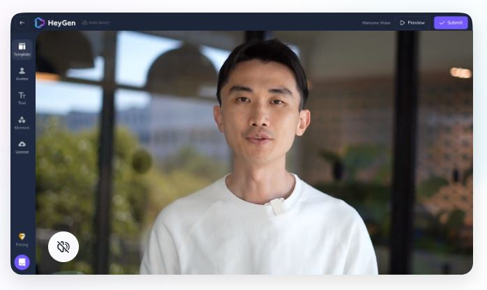
Система получает изображение или образ персонажа и звуковую дорожку. Нейросеть соотносит звуки речи с движениями губ, мимикой и иногда движениями головы. Если исходные данные представлены текстом, сначала может применяться синтез речи (Text-to-Speech).
Например, пользователь задаёт:
«Создай видео с виртуальным ведущим, который объясняет основные этапы работы над мультимедийным проектом».
Можно создавать информационные ролики без съёмки ведущего, а также выпускать несколько языковых версий одного материала.
Возможны неестественная мимика, ошибки синхронизации и недостаточная выразительность персонажа. Для использования внешности или голоса реального человека необходимо учитывать согласие и права на соответствующие материалы.
Создание серии видеосцен на основании сценария
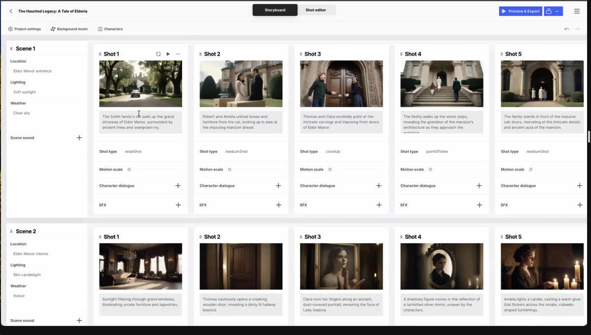
Пользователь предоставляет сценарий, содержащий последовательность событий, действующих лиц и указания для камеры. Система разделяет его на сцены, помогает подготовить раскадровку и генерирует отдельные видеофрагменты. Затем клипы могут объединяться в монтажной программе.
Например, пользователь пишет:
«Сцена 1: автомобиль движется по горной дороге. Сцена 2: крупный план колеса. Сцена 3: автомобиль останавливается у озера».
Script-to-Video нередко представляет собой не одну универсальную модель, а рабочий процесс, объединяющий языковую модель, генератор изображений, видеомодель и монтажные инструменты.
Подход помогает автоматизировать предварительную визуализацию, согласование идеи и создание чернового монтажа будущего мультимедийного продукта.
Сложно сохранить одинаковых персонажей, объекты и освещение между сценами. Для связного сюжета часто требуются повторные генерации и ручной монтаж.
Перенос движений реального исполнителя на цифрового персонажа
Система анализирует движения человека на исходном видео и переносит их на цифрового персонажа. В зависимости от метода используются положение суставов (Pose Estimation), выражения лица, жесты и последовательность движений.
Например, пользователь записывает человека, исполняющего танец, и использует его движения для анимации нарисованного героя.
Позволяет использовать реальные движения в анимационных проектах без сложной ручной покадровой работы.
Ошибки могут возникать при быстрых движениях, перекрытии частей тела и нестандартных позах. Сложные действия не всегда корректно переносятся на персонажа с другими пропорциями.
Интеллектуальный анализ и автоматизация видеомонтажа
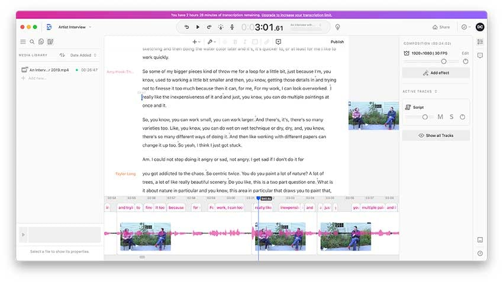
AI Video Editing объединяет методы распознавания речи, анализа содержания и автоматического редактирования монтажной последовательности. Нейросеть может находить паузы, важные фрагменты, смены сцен и объекты, которые нужно удерживать в кадре.
Например, пользователь загружает часовую запись лекции и просит:
«Собери минутный ролик с основными выводами, убери долгие паузы и добавь субтитры».
Основные направления:
Интеллектуальный монтаж сокращает время на поиск эпизодов, нарезку, подготовку субтитров и адаптацию одного материала к разным площадкам.
Система может неверно определить смысловую значимость фрагментов или ошибиться при распознавании речи. Итоговый монтаж требует проверки, особенно в образовательных и документальных материалах.
| Способ | Входные данные | Основной результат | Применение в мультимедиа |
|---|---|---|---|
| Text-to-Video | Текст | Новый видеоролик | Визуализация сцен и реклама |
| Image-to-Video | Изображение и инструкция | Анимированное видео | Оживление фото и иллюстраций |
| Video-to-Video | Исходное видео и инструкция | Преобразованный ролик | Стилизация и спецэффекты |
| Video Inpainting | Видео и выделенная область | Локальное изменение | Удаление и замена объектов |
| Video Enhancement | Видео низкого качества | Улучшенная запись | Реставрация и подготовка к публикации |
| Audio-to-Video | Аудио или текст и образ | Говорящий аватар | Обучающие ролики и презентации |
| Script-to-Video | Сценарий | Серия видеосцен | Раскадровка и видеопроизводство |
| Motion Transfer | Видео движения и персонаж | Анимированный персонаж | Анимация и визуальные эффекты |
| AI Video Editing | Готовые видеоматериалы | Смонтированный ролик | Подкасты, интервью и короткие видео |
По способу работы с исходными данными искусственный интеллект для видео включает системы создания роликов по тексту и изображениям, преобразования существующих записей, локального редактирования, восстановления качества, анимации цифровых персонажей и автоматизации монтажа.
Для разработки мультимедийных продуктов эти подходы могут применяться совместно: Text-to-Video помогает создать первые визуальные сцены, Image-to-Video оживляет иллюстрации, Video-to-Video и Video Inpainting позволяют доработать отснятый материал, а AI Video Editing помогает подготовить итоговую монтажную последовательность.
Главной технической особенностью видеогенерации остаётся необходимость сохранять временную согласованность: объекты, движения и окружение должны выглядеть связно на протяжении всего ролика. Кроме того, при использовании ИИ необходимо проверять качество, достоверность и права на исходные материалы, особенно если видеоряд содержит изображения или голоса реальных людей.
Искусственный интеллект применяется для синтеза речи и музыки, создания звуковых эффектов, распознавания и перевода речи, восстановления качества звукозаписей и автоматизации аудиопроизводства. При разработке мультимедиа-продуктов эти технологии используются для озвучивания видеороликов, игр и виртуальных пространств, подготовки подкастов, создания саундтреков и локализации контента.
По способу работы с исходными данными можно выделить генерацию речи по тексту (Text-to-Speech), музыки по описанию (Text-to-Music), звуковых эффектов (Text-to-Sound), клонирование и преобразование голоса (Voice Cloning / Voice Conversion), распознавание речи (Speech-to-Text), улучшение аудио (Audio Enhancement), разделение источников звука (Source Separation), преобразование существующих записей (Audio-to-Audio), перевод речи (Speech-to-Speech Translation) и интерактивные голосовые системы (Real-time Conversational Audio).
Генерация человеческой речи по текстовому описанию
Пользователь вводит текст, а нейросеть преобразует его в звуковую речь с определённым голосом, произношением, темпом и интонацией. Современные системы могут учитывать язык, стиль подачи и эмоциональные характеристики высказывания.
Например, пользователь задаёт:
«Озвучь текст экскурсии спокойным голосом диктора, с чётким произношением и небольшими паузами между абзацами».
В классических нейросетевых системах могут выделяться акустическая модель и вокодер — компонент, превращающий акустическое представление в звуковую волну. В других архитектурах синтез выполняется более непосредственно с использованием аудиотокенов или латентных представлений.
Text-to-Speech позволяет озвучивать большие объёмы текста без записи каждого фрагмента диктором. Подход ускоряет подготовку нескольких языковых версий и упрощает обновление аудиоматериалов после изменения текста.
Возможны ошибки ударений, произношения имён, сокращений и специализированных терминов. Интонация и эмоциональная выразительность не всегда соответствуют контексту. При использовании синтетического голоса реального человека необходимо его разрешение.
Генерация музыкальных композиций по текстовому описанию
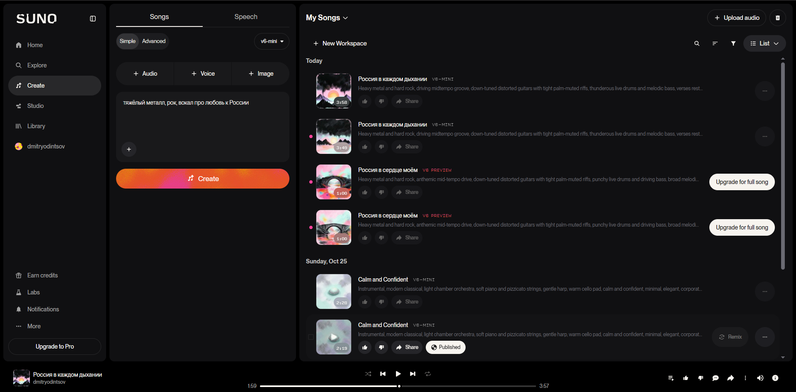
Пользователь описывает желаемую музыку: жанр, настроение, инструменты, ритм, темп и наличие вокала. Генеративная модель создаёт аудиозапись, стараясь согласовать мелодию, гармонию, ритм и тембры на протяжении композиции.
Например, пользователь вводит:
«тяжёлый металл, рок, вокал про любовь к России».
Некоторые модели формируют музыку как последовательность сжатых аудиотокенов, другие используют диффузионные или близкие генеративные подходы. Результатом обычно становится готовый звук, а не обязательно редактируемая MIDI-партитура.
Технология ускоряет поиск музыкальной идеи и создание предварительного саундтрека. Разработчик мультимедийного продукта может быстро сравнить несколько вариантов жанра, темпа и настроения без записи инструментальных партий.
Сложно гарантировать точную длительную структуру, конкретную гармонию или сохранение одной мелодии при повторной генерации. Для коммерческого использования важно проверять условия лицензирования и права на исходные материалы.
Клонирование голосовых характеристик и преобразование речи
Voice Cloning создаёт синтетическую речь с характеристиками определённого голоса на основе разрешённого образца. Нейросеть анализирует тембр, высоту тона, манеру произношения и другие особенности говорящего.
Voice Conversion решает другую задачу: преобразует уже записанную речь так, чтобы она звучала голосом другого говорящего, по возможности сохраняя содержание и особенности исполнения.
Например, диктор с его согласия предоставляет образец своего голоса. После этого новые версии учебных текстов могут быть озвучены похожим синтетическим голосом без повторной студийной записи.
Схема Voice Cloning:
Схема Voice Conversion:
Технологии позволяют сохранять единый голос персонажа или ведущего в серии материалов и обновлять озвучивание без полного повторения записи. Особенно полезны для многоязычных проектов и персонализированных интерфейсов.
Возможны изменения акцента, интонаций и естественности звучания. Клонирование чужого голоса без разрешения связано с рисками нарушения прав личности, мошенничества и создания аудиодипфейков.
Автоматическое распознавание речи и преобразование её в текст
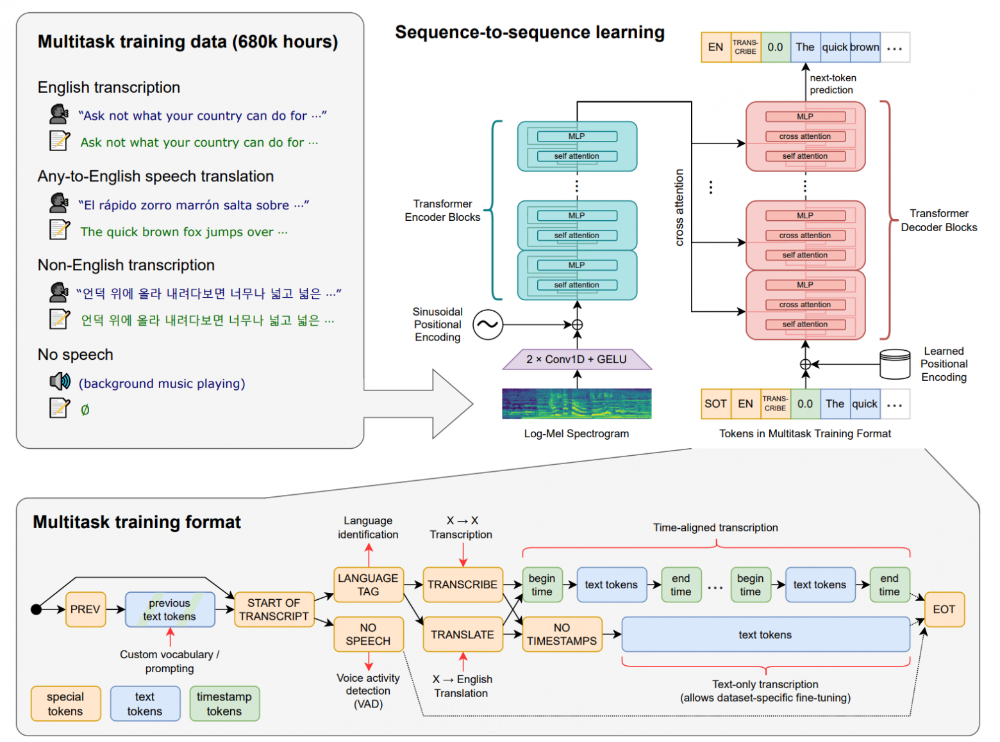
Speech-to-Text, или Automatic Speech Recognition (ASR), преобразует речевую аудиозапись в текст. Модель анализирует акустические признаки звука и определяет последовательность произнесённых слов.
Например, пользователь загружает запись часовой лекции. Система формирует текстовую расшифровку, которую затем можно использовать для конспекта, поиска по содержанию или создания субтитров.
Дополнительные функции могут включать Speaker Diarization (определение того, кто и когда говорил) и Word-level Timestamps (временные границы слов). Они не обязательно входят в состав каждой ASR-модели.
ASR экономит время на расшифровке интервью, лекций, совещаний и подкастов. Текст можно индексировать, редактировать, переводить и использовать для автоматической подготовки субтитров.
Точность снижается при сильном шуме, нескольких одновременных голосах, редких профессиональных терминах и выраженном акценте. Иногда модель добавляет слова, которых не было в записи, поэтому важные расшифровки требуют проверки.
Перевод устной речи с одного языка на другой
Speech-to-Speech Translation получает речь на исходном языке и формирует речевой ответ на другом языке. В каскадных системах сначала выполняются распознавание речи, перевод текста и синтез нового аудио. Интегрированные модели могут работать с более непосредственными аудиопредставлениями.
Например, выступающий произносит на русском языке: «Добро пожаловать на конференцию», а система формирует английскую речь: «Welcome to our conference».
Некоторые модели стараются сохранять выразительные характеристики исходной речи: паузы, темп и эмоциональный стиль.
Технология упрощает создание мультимедийных материалов для международной аудитории и сокращает объём ручной работы при локализации.
Возможны ошибки при передаче идиом, специализированных терминов и культурных особенностей. При переводе в реальном времени дополнительной проблемой становится задержка, а сохранение исходных эмоций не всегда получается точным.
Интерактивные голосовые системы реального времени
Real-time Conversational Audio позволяет пользователю общаться с ИИ с помощью голоса. Система слушает реплики, интерпретирует вопрос, формирует ответ и произносит его. Важны небольшая задержка и способность реагировать на перебивания.
Например, пользователь спрашивает виртуального экскурсовода: «Почему это здание было построено именно здесь?». Голосовая система отвечает и может продолжить разговор после уточняющего вопроса.
Каскадный подход:
Нативный Speech-to-Speech:
Промежуточный текст в нативном подходе не обязательно является отдельным этапом.
Голосовое взаимодействие удобно в ситуациях, когда использование клавиатуры или экрана затруднено. Оно позволяет создавать интерактивных персонажей, виртуальных экскурсоводов и образовательных помощников.
Требуются малая задержка, устойчивость к фоновому шуму и корректная обработка перебиваний. Возможны ошибки понимания, неточные ответы и неверное распознавание речи нескольких собеседников.
| Способ | Входные данные | Основной результат | Применение в мультимедиа |
|---|---|---|---|
| Text-to-Speech | Текст | Синтезированная речь | Озвучивание, аудиокниги, виртуальные экскурсии |
| Text-to-Music | Текстовое описание | Музыкальная композиция | Саундтреки, реклама, игры |
| Voice Conversion | Исходная речь и целевой голос | Преобразованная речевая запись | Дубляж, изменение голоса |
| Speech-to-Text | Аудиозапись речи | Текстовая расшифровка | Субтитры, лекции, подкасты |
| Speech-to-Speech Translation | Речь на одном языке | Речь на другом языке | Дубляж, международные проекты |
| Real-time Conversational Audio | Живая речь пользователя | Голосовой ответ | Ассистенты, VR/AR, интерактивные персонажи |
По способу работы с исходными данными ИИ для аудио включает системы создания речи, музыки и звуков по тексту, преобразования голоса, распознавания и перевода речи, улучшения существующих записей, разделения аудиодорожек и интерактивного голосового взаимодействия.
Для разработки мультимедийных продуктов эти технологии могут использоваться совместно: Text-to-Music создаёт музыкальное сопровождение, Text-to-Sound — звуковые эффекты, Text-to-Speech — дикторское озвучивание, Audio Enhancement очищает записи, а Speech-to-Text помогает создавать субтитры и материалы для монтажа.
При использовании аудиомоделей важно учитывать, что сгенерированный звук может содержать артефакты или недостоверные детали, а клонирование голоса связано с вопросами согласия и идентификации. Для коммерческих проектов также необходимо проверять условия использования моделей, лицензии и права на музыкальные и речевые материалы.
Целью работы было систематизировать возможности и средства применения искусственного интеллекта в разработке мультимедийных продуктов. В ходе работы были рассмотрены основные направления применения ИИ при создании трёхмерных моделей, изображений, видео и аудио, описаны принципы работы систем каждого направления, приведены примеры доступных сервисов, платформ и исследовательских моделей, выделены преимущества и ограничения технологий, а также определены области применения в разработке мультимедийных продуктов, включая VR/AR-приложения.
По способу генерации искусственный интеллект для 3D-моделирования разделяется на системы, создающие объекты по тексту, одному изображению, нескольким изображениям, видеозаписи или инженерному заданию, а также на системы генерации целых виртуальных миров. Эти подходы могут использоваться совместно: Text-to-World формирует окружение, Text-to-3D создаёт отдельные элементы, Image-to-3D и Multi-view-to-3D помогают переносить реальные предметы в цифровую среду, а Video-to-3D используется для оцифровки существующих помещений.
Для работы с фотографиями ИИ предоставляет системы создания изображений по тексту, преобразования исходных фотографий, изменения локальных областей, расширения композиции, восстановления качества и генерации по визуальным образцам: Text-to-Image создаёт исходные концепции, Reference-based Generation помогает выдерживать общий стиль, Inpainting и Outpainting используются для точной адаптации композиции, а Image Enhancement подготавливает готовые материалы к публикации.
В области видео искусственный интеллект охватывает создание роликов по тексту и изображениям, преобразование существующих записей, локальное редактирование, восстановление качества, анимацию цифровых персонажей и автоматизацию монтажа. Главной технической особенностью видеогенерации остаётся необходимость сохранять временную согласованность: объекты, движения и окружение должны выглядеть связно на протяжении всего ролика.
В области аудио рассматриваются системы создания речи, музыки и звуков по тексту, преобразования голоса, распознавания и перевода речи, улучшения существующих записей и интерактивного голосового взаимодействия: Text-to-Music создаёт музыкальное сопровождение, Text-to-Sound — звуковые эффекты, Text-to-Speech — дикторское озвучивание, Audio Enhancement очищает записи, а Speech-to-Text помогает создавать субтитры и материалы для монтажа.
При применении генеративных технологий необходимо учитывать их ограничения. Нейросети могут изменять достоверные детали и создавать новые, отсутствовавшие в исходном материале элементы, поэтому важные материалы требуют проверки, особенно в документальных, образовательных и коммерческих проектах. Клонирование голоса связано с вопросами согласия и идентификации, а для коммерческих проектов необходимо проверять условия использования моделей, лицензии и права на исходные материалы. При разработке VR/AR важно учитывать, что визуально реалистичная 3D-сцена не обязательно является технически готовой: для интерактивности могут потребоваться оптимизация геометрии, физические столкновения, правильный масштаб и настройка в игровом движке.
Таким образом, искусственный интеллект становится частью производственного процесса на всех этапах разработки мультимедийных продуктов — от поиска идеи до подготовки финальных материалов: он ускоряет создание концепций, автоматизирует рутинные операции и делает доступными задачи, которые ранее требовали узких специалистов.